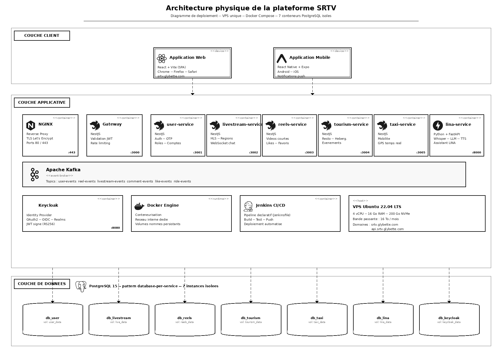

Architecture du Projet SRTV
Diagramme de déploiement — VPS unique, Docker Compose, 7 conteneurs PostgreSQL isolés

3 couches : Client · Applicative (NGINX, Gateway, 7 services, Kafka, Keycloak) · Données
NestJS · FastAPI · Kafka · PostgreSQL 15 · Docker · Jenkins CI/CD
20 / 34